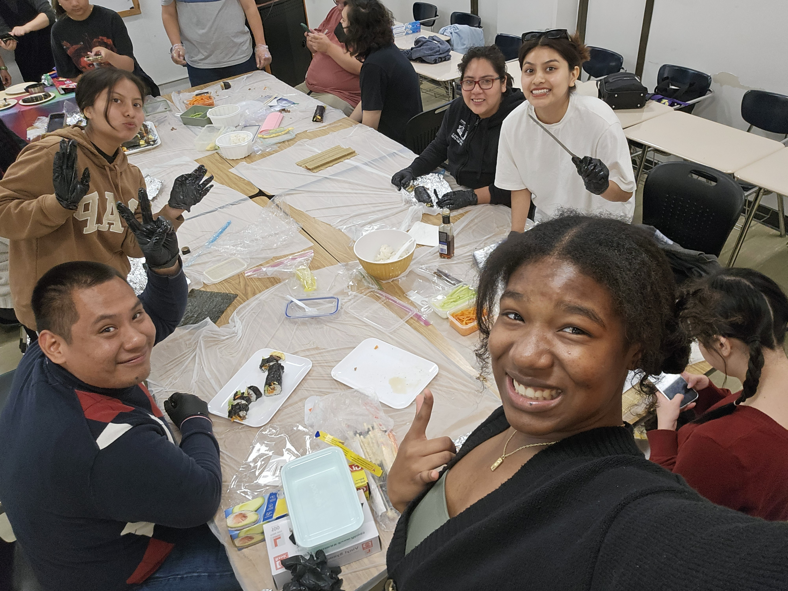
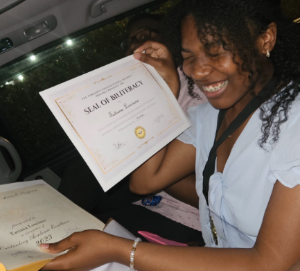
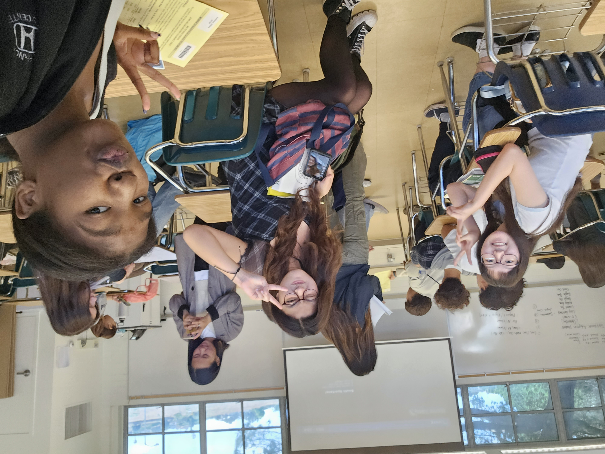
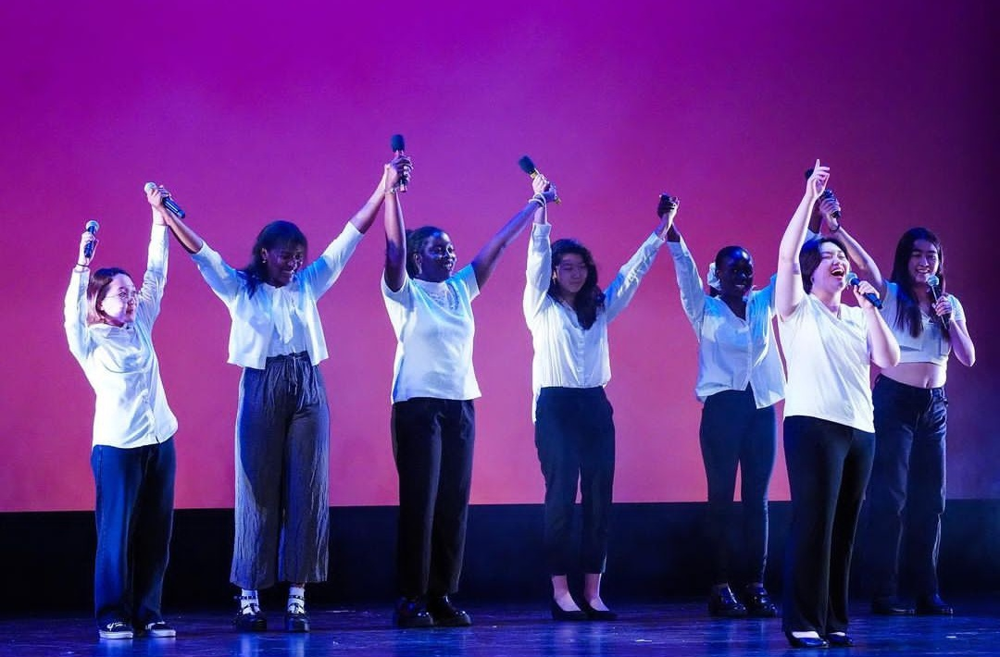

My Journey
I started learning Korean when I was 10 years old. At first it was just for fun and done out of curiosity, but the more I learned, the more I wanted to use it in real life. I'd practice greetings before walking into Korean restaurants and markets, my heart racing every time. When someone smiled and answered me in Korean, I'd say 감사합니다 and walk out feeling like I'd made progress.
Over the years, those small moments added up. I taught myself for 5 years, then took Korean all through high school with Ms. Cho and Ms. Park, earned my Seal of Biliteracy in Korean Language, and later became a TA for a Korean 1 and 2 class, helping other students with the same struggles I once had. Today I also use my Korean working at H Mart.
It hasn't always been easy. School, work and growing up all got in the way at times. But I learned that a passion only grows if you keep feeding it, even a little bit every day.

My Advice for Learners
- Practice out loud, even if you're nervous. Mistakes are how you improve.
- Use Korean in real places, like ordering food or greeting shop owners.
- Find media you love, like dramas, music or variety shows, and learn from it.
- Be persistent. 5-10 minutes a day can show true progress. 화이팅!
Gallery





Watch
Resources I Used
🔗 Talk To Me In Korean, the site I used to help me with Korean